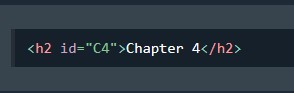
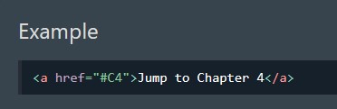

The id attribute specifies a unique id for an HTML element.
The id attribute is used to point to a specific style declaration in a style sheet. It is also used by JavaScript to access and manipulate the element with the specific id.
The syntax for id is: write a hash character (#), followed by an id name. Then, define the CSS properties within curly braces {}.
Below is an example of a header in which a specific ID has been applied.
HTML bookmarks are used to allow readers to jump to specific parts of a webpage.
Bookmarks are majorly important when you have a very long webpage.
First create a bookmark with the id attribute:

Then after that, add a link to the bookmark:
